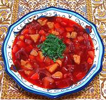

|
Chicken, Beet & Turnip SoupUzbek - Oshi Sholgom Kizilcha | ||||
| Makes: Effort: Sched: DoAhead: |
12 cups *** 2 hrs Yes |
This simple but delicious soup of Chicken and Winter Root Vegetables is suitable for cooking in the primitive kitchen of a yurt. It could also be made with mutton, goat, beef, horse, or camel - see Comments. | |||
|
|
1-1/4 14 14 4 5 ------ 4 ------ 1/3 2 1/3 ------ ar ------ ar |
# oz oz oz oz --- c --- t t t --- --- |
Chicken meat (1) Beets Turnips Carrots Onions -------- Chicken Broth -- Seasonings Cumin Seed Salt Pepper, black -- Garnish Parsley -- Serve with Bread (2) |
Prep - (40 minutes - exclusive of making Broth)
|